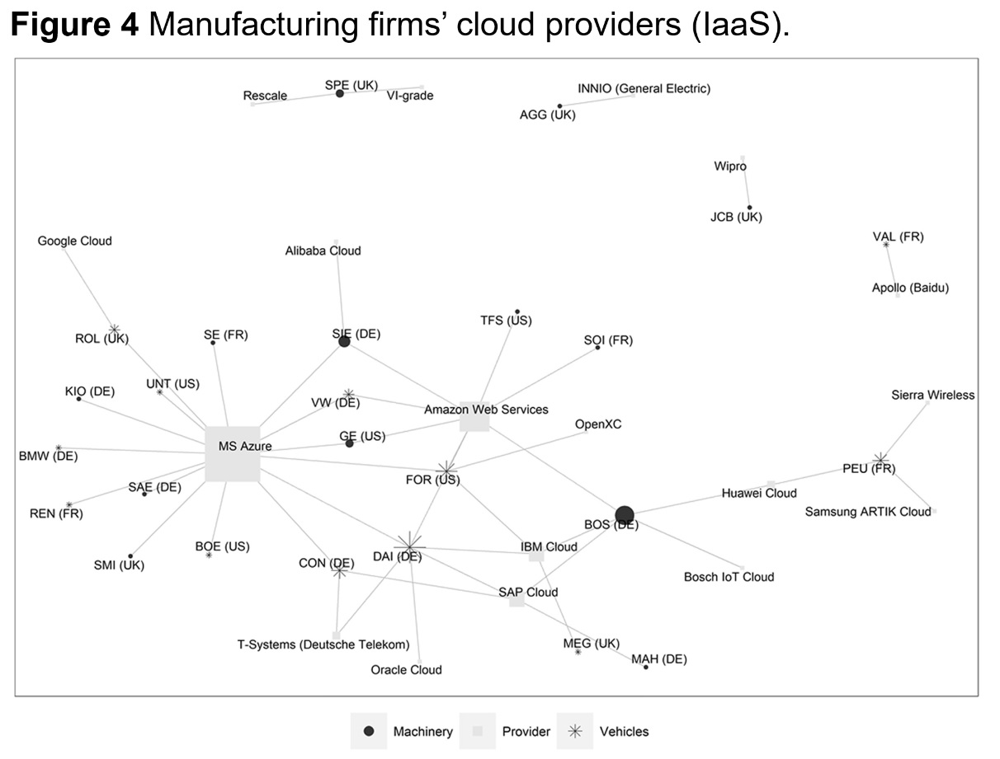
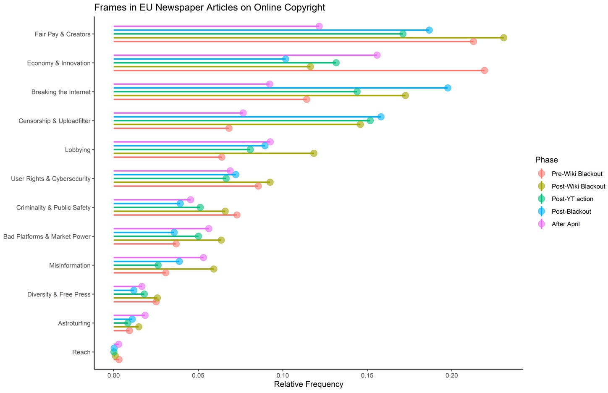

Digitalization fundamentally restructures value-creation in
capitalist economies. Concepts such as surveillance, digital, or
platform capitalism emphasize how data, digital technologies, and
digital infrastructures increasingly shape economic and social
activities. While an emerging literature in management studies and
economics studies new digital(ized) business models, the implications
for the political power of business remain understudied. By identifying
a consumer-platform alliance against platform regulation, existing
studies narrowly focus on digital platform firms but neglect non-digital
firms and non-platform-based business models. Further, the literature
all but ignores the related field of lobbying and interest group
studies. To broaden and complement the platform power debate, my
dissertation asks how digitalization affects (1) the power resources,
(2) political preferences, and (3) lobbying strategies of business. I
address these questions in a series of three interrelated research
papers.
In the first article, co-authored with Christine Trampusch, we argue
that much as digitalization has transformed business models across all
sectors of the economy, it also transformed the power resources of
non-digital firms. We introduce the concept of digital power resources
that (1) can be structural (control over data) and infrastructural
(control over platforms and standards), (2) are accumulated by firms of
all sectors, not only the digital and ICT sector, and (3) vary in their
cross-sectoral distribution across different national contexts. We
illustrate the validity of our concept with a case study on the German
automotive sector.

My second article studies the political preferences and lobbying
coalitions of platform-dependent businesses. I argue that
platform-dependency can lead to an alignment of preferences between
platform-dependent businesses and the platform itself. As downstream
users of platform infrastructures, complementors (e.g. third-party
sellers, news publishers, content producers etc.) are reliant on the
continuous operation of platform ecosystems – even though platforms
engage in anti-competitive practices and extract rents. I hypothesize
that platform-complementor coalitions are likely to emerge on issues
regulating the entire ecosystem, while issues that regulate within
ecosystem conflicts lead to diverging preferences between platforms and
complementors. To test this hypothesis, I plan a mixed-methods study.
The paper combines a quantitative analysis of lobbying coalitions on
legislation proposed in the 116th US Congress with an in-depth case
study of the Journalism Competition and Preservation Act of 2022.
In my third article, I compare the lobbying success of platforms in
the case of the US Stop Online Piracy Act of 2012 with the EU Copyright
Directive of 2019. Using a combination of process-tracing and
text-as-data methods I find that platforms in both cases adopted outside
lobbying strategies to increase issue-salience and tried to reframe the
discussion. However, they were only successful in preventing legislation
in the US. In the EU a fragmented (i.e. nationalized) debate and the
resulting persistence of strong counter-frames in some member states
hindered platform power.
